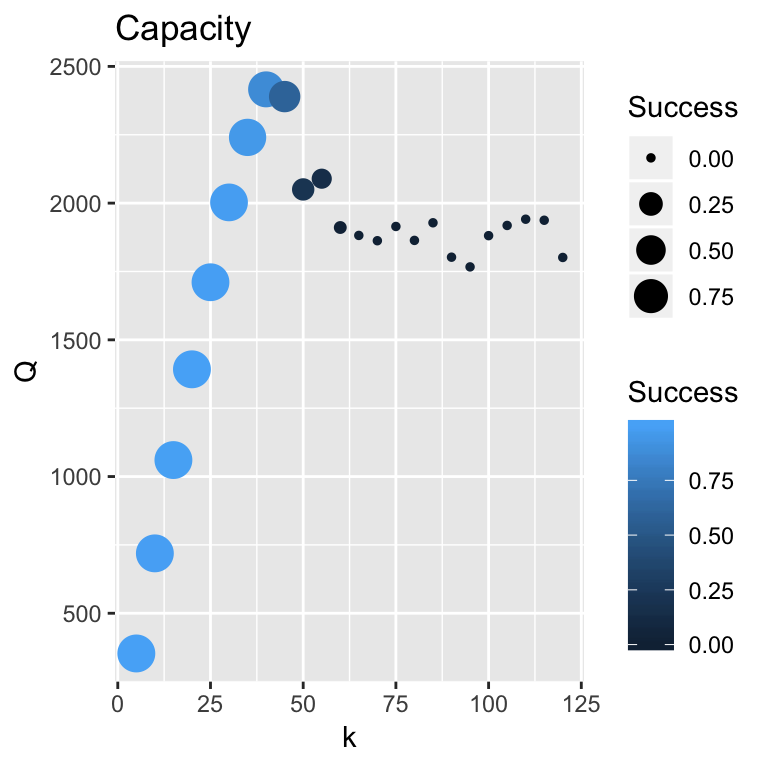

The Future
Intelligent Transportion Systems
As we carefully review the outcomes of the simulations derived from various deterministic and stochastic models, we must conclude that self-optimizing drivers are working against their own self interest of moving forward with no or minimum delay. Contrast the assumptions of the Zipper Merge and Traffic Breakdown Part 6 simulations.
The Zipper Merge simulation assumes that drivers act in concert to align themselves before merging. The analysis suggests that drivers can successful merge at any speed, suggesting that high speed merges can take place. There is no empirical evidence to prove this contention other than observing drivers on a race track.
Traffic Breakdown Part 6 simulations assume that drivers act individually. Drivers, who have no incentive to give their counterparts room to maneuver, promote delay. This kind of self-serving behavior is not new to traffic operations. It is known as Braess’s Paradox (Braess, Nagurney, and Walkobinger 2005). It has been shown both with mathematical modeling and with empirical evidence that closing certain roads in a roadway network can improve service. For example, Roughgarden and Tardos (2002) reported that total delay using convex programming for a simple idealized network would be one-third greater for a “non-optimum” network than for an “optimum” network.
Some people may claim that counterintuitive methods as suggested by the Braess’s Paradox approach has no application to traffic breakdown at a bottleneck or at a lane drop. It is far-fetched notion to assume the geometric layout of an interstate freeway interchange, say, can be improved in any meaningful or practical way. Secondly, training drivers to change their habits is social engineering requiring unobtainable behavioral changes. For example, drivers are taught that the right and left freeway lanes are reserved for slower and higher speed travel, respectively. Take any freeway of your chosing and observe that this teaching is not enforced by law enforcement and ignored by the driving public. Tailgating is common practice. Thirdly and finally, critics can claim that the deterministic Zipper Merge model disregards traffic volatility, therefore it ignores a most fundamental premise of the work presented here in the cartools package.
These are formidable criticisms. However, we have not considered controlling traffic noise while leaving individual driver behavior alone. How can this be done? An answer may be to apply Intelligent Transportion Systems (ITS) in a smart city environment. Consider this proof of concept:
Collect real-time data. Data collected with lidar and radar equipment placed roadside or collected on-board a vehicle with a GPS system. Measures, including location \(x_{vehicle}(t)\) and speed \(u_{vehicle}(t)\) data will be transmitted wirelessly and stored on a central controller computer.
Develop a brkzipper forecast algorithm. The algorithm will be created along the lines of the Zipper Merge and Traffic Breakdown Part 6 models. In lieu of simulating zipper and traffic breakdown merges, brktrials algorithm will be designed to forecast \(\hat{x}_{vehicle}(t)\) locations and \(\hat{u}_{vehicle}(t)\) speeds at future times of \(\tau\).
Transmit the forecasts back to the vehicles. To be effective, drivers will relinquish control of their vehicles and an on-board control will be used. The on-board systems are contemplated to be automonous units similar in operation to autonomous cruise control (ACC) devices used on contemporary vehicles sold today.
Capacity
Throughout our discussion of cartools, we have intentionally avoided discussing roadway capacity, a topic that has received much attention (Laflamme and Ossenbruggen 2018). Elefteriadou (2014) introduces the subject using the HCM guideline definition as a “maximum obtainable flow rate” or “throughput” and the inadequacy of this definition. We have discussed traffic flow and introduced it as a parsimonius, stochastic model:
- \(Q(t) = k * U(t)\) where \(U(t) = U(k, u, \sigma, h_{safe}, t)\).
According to our findings, the roadway capacity is more appropiately defined by traffic density “k,” where we designate as the maximum throughput \(k^*\). Thus, capacity is defined as:
- \(Q^* = k^* * \bar{u}\)
where \(k^*\) is the “true measure” of maximum throughput.
From a previous discussion, we used the HCM guidelines to specify this value as \(k^*\) = 45 vpm. Thus, \(Q^* = 45 * 53\) = 2390 vph. The probability of being in a congested state \(X = 1\) was estimated to be \(\pi(k^* = 45)\) = 0.41.


We also determined \(\pi(k = 50)\) = 0.8 with \(Q = 50 * 41\) = 2050 vph. If maximum throughput refers to flow, then \(Q^*\) = 2390 vph. However, if maximum throughput refers to density, then \(Q^*\) = 2050 vph.
\(\pi\) is a performance measure. \(\pi(k^* = 45)\) = 0.41 suggests the roadway will be congested at reasonably high value. Maybe \(Q^* = k^* * \bar{u} = 40 * 60\) = 2400 where \(\pi\) = 0.15 is more appropriate probability.
Package Summary
A quick read of the Home Analytical Tools Section may have given the impression that the goal to create the cartools package, a collection of R computer algorithms, will be overwhelming difficult to understand and implement. Words, like complex, dynamics, theory, parsimonious, stochastic and model integration can be daunting. No question that designing and operating a transportation system are difficult problems. Hopefully, by disecting the problem into manageable pieces and synthesizing the results from the individual pieces brings clarity to the process. The ultimate aim of using cartools package tools is to improve our chances of mitigating congestion and improving performance using the simple mathematical and graphical tools.
Lessons Learned
What have we learned about traffic performance using the cartools package? The most notable lesson learned is:
- By modeling driver behavior with a simple, parsimonious Brownian Bridge model of speed, it is possible to explain and forecast traffic breakdown on a ring-road and at a bottleneck.
The potential of the cartools package as a learning tool has been demonstrated. Hopefully, this platform can be adapted and expanded to help users identify the root cause or causes for other congestion problems.
My next task is add HTML widgets and animation to the package. Adding these features will allow the user to simply conduct sensitivity analyses on-line. For example, the effects of speed and density on ring-road performance can be explored. Sliders for \(u\), \(\sigma\) and \(k\) will be provided so a user change them at will. The cartools package will instantaneously produce a histogram of headways as illustrated above.
This package is open to the public, https://github.com/PJOssenbruggen/Basic. In other words, I am inviting people to share their experiences with the package with me. See https://guides.github.com/activities/forking/.
GitHub promotes this activity. See https://github.com/explore.
Reference
Braess, D., A. Nagurney, and T. Walkobinger. 2005. “On the Paradox of Traffic Planning.” Transportation Science 39 (4):446–50.
Elefteriadou, Lily. 2014. An Introduction to Traffic Flow Theory. New York, New York: Springer.
Laflamme, Eric, and Paul J. Ossenbruggen. 2018. “Estimation of Stochastic Traffic Capacity Using Extreme Value Theory and Censoring.” European Transport Research Review in review.
Roughgarden, Tim, and Éva Tardos. 2002. “How Bad Is Selfish Routing?” J. ACM 49 (2). New York, NY, USA: ACM:236–59. https://doi.org/10.1145/506147.506153.